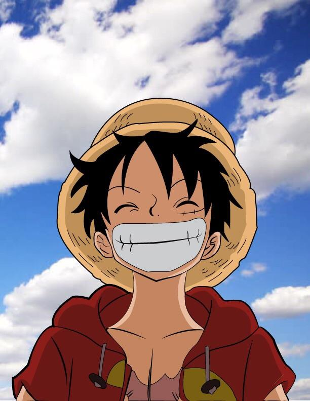

Monkey D. Luffy é o protagonista do mangá e anime One Piece, criado por Eiichiro Oda. Ele é o capitão dos Chapéus de Palha e possui o poder da Gomu Gomu no Mi, uma fruta do diabo que lhe concede habilidades elásticas. Luffy é conhecido por sua determinação, coragem e desejo de se tornar o Rei dos Piratas. Ele é um personagem carismático e inspirador, sempre disposto a proteger seus amigos e lutar por seus sonhos.